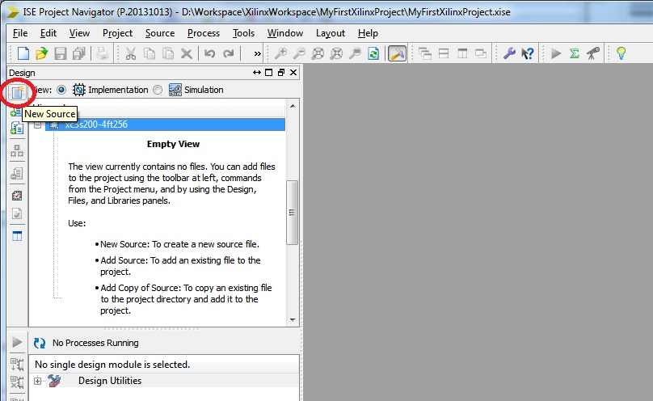
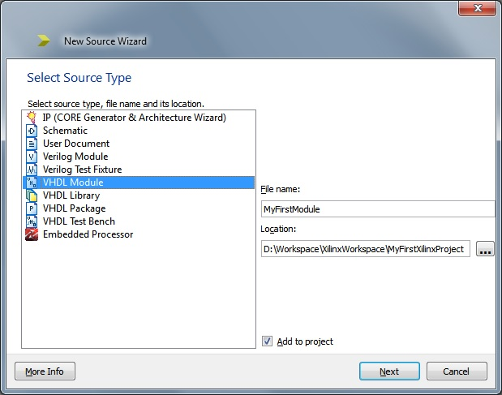
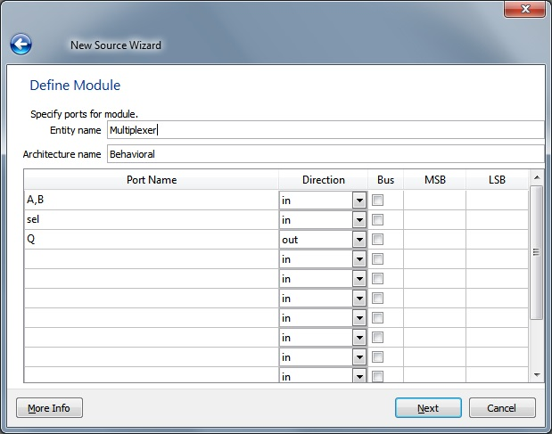
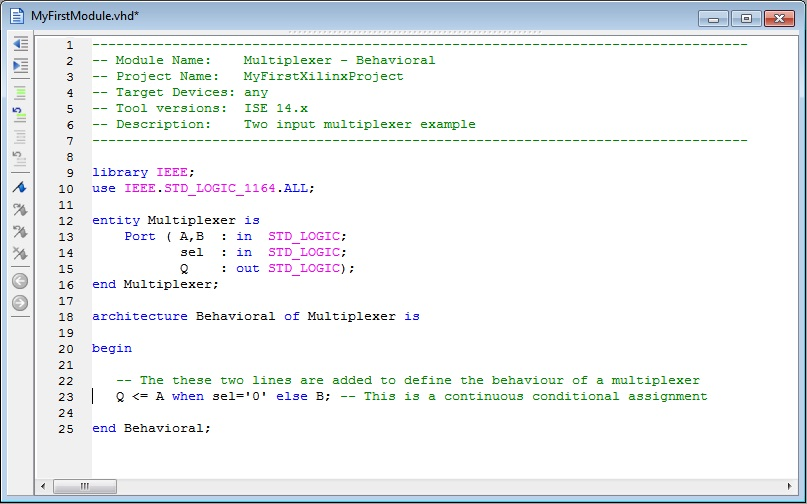

EEE6225 Systems Design
| Tutorial 1: Introduction to VHDL and Xilinx ISE |
| Creating a new design module |
The project navigator should now be showing an alarmingly empty project. Click on the 'new source' icon as circled in the figure 1 or from the Project menu select New Source ... |
|  Figure 1. ISE Project Navigator Empty View (New source button highlighted) |
A Select Source Type dialogue box will open, as shown in Figure 2. Choose VHDL Module from the
left-hand box and set the file name to something sensible. Make sure the file location is correct and that the Add to project checkbox is selected. Click Next. |
|  Figure 2. Select new source type dialogue box |
In the next dialogue box in the column headed Port Name, click on the first new row and enter the names A,B; click on the next row and enter the name sel. Finally, click on the next row, enter the name Q, but this time, on the same row, in the Direction column click on the word in to obtain a drop down menu and change the direction to out. |
|  Figure 3. Define VHDL Source dialogue |
Click on Next which causes the last (Summary) dialog to be displayed allowing review of the values entered, when correct click on Finish. The tool will automatically prepare a vhdl source file with a comment header, entity declaration and an empty archtecture block in which the required behaviour needs defining. |
Insert the following line between the words begin and end Behavioral; Q <= A when sel = '0' else B;Save the file File > Save, or (Ctrl+S) and close the editor window. More information about VHDL can be found using the references given in the coding examples section. |
|  Figure 4. Example VHDL description of a multiplexer |
| Continue on to Adding an existing module to your project |